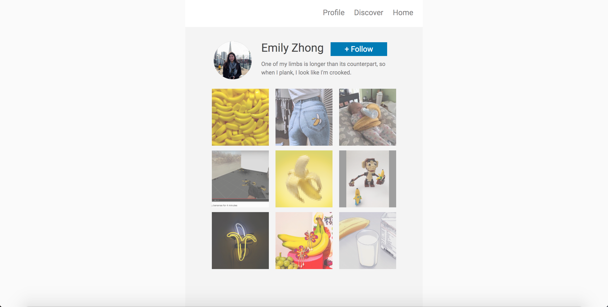

Note: Please review the lecture slides before you go through this assignment.
In this assignment, You will be creating a mocked fake instagram (also known as a finsta) for yourself. We've provided some starter code (download link is below), but it's your job to fill out the information and make it look pretty!
To start off, let's flesh out the information in the HTML to make it personalized and about you. Open up index.html in the text editor (VS Code, Sublime, etc) of your choice and fill out the following:
- In the div with the id "username", put in your name.
- In the div with the id "about", type one short sentence or phrase about yourself.
- Place one profile picture of yourself in the assets/img folder.
- In the image tag inside the div with the id "profile-pic", place the image of yourself from the step above. Horizontal photos work better than vertical ones for this assignment, although square ones are the best. Vertical photos will end up having a gray edge on both sides, but that's fine!
- Place up to 9 images of your choice in the assets/img folder. Horizontal photos work better than vertical ones for this assignment, and square ones are the best.
- In the image tag inside the divs with the class "item", place the images from the step above. They won't show up yet, because we haven't done the styling for it in the next section!
Now that your Instagram is all personalized, you are ready to start fixing the styling.
Here are the steps to giving your Instagram some visual hierarchy:
- Link your CSS to your HTML file by adding the appropriate linking tag in the head tag of your
HTML. All the steps below will be in the style.css file. Please do not unlink the .initial.css
file, as it contains basic starter styling.
Note thatheadandheaderare different tags.
Also because we haven't added any CSS to our style.css file, you will not see any changes to the website. - Notice that there's a small white margin around the top and bottom (and although you can't see it, sides). Each HTML document starts with a margin of around 8 pixels. Set the margin to 0 for both the HTML and body.
- Select the profile picture and use the border-radius property to make it a circle. Then, use the overflow property to ensure that the image inside the div is cropped by its parent. (Play around or search online to figure out what values it takes!)
- Follow button: add 5px to the top and bottom, and 30px to the left and right.
- Turn each of the posts into a square with a 120 pixel height and 120 pixel width.
- Create a 10px horizontal space between items.
- Create a 10px vertical space between each row.
HINT: If you're having issues with vertical margins, look at this link for help! - Add 20px of space between each of the navigation bar items.
- Create a hover effect, so that items will have full opacity when hovered over. It should also have a transition period of 0.2 seconds.
- Create an effect for the follow button, so the font becomes size 18 px when clicked. As a result, the button will become larger when clicked on.
- Add a hover effect such that the text of the navigation turns completely opaque when hovered over.
- In one selection, make the follow button, picture items, and nav bar items have a pointer cursor.
If you are lost during this assignment, do not fret! Post to Ed or come to office hours.
Your finsta should look something like this:
In this part of the assignment, you will be reading this article related to web design principles and responding to a few questions. The purpose of this section is to prompt design thinking and awareness -- we are a design course, after all. Instructions can be found in the design_responses.html file (which is also linked at the bottom of index.html).
Within the p tags, replace "[INSERT YOUR RESPONSE HERE]" with your responses in design_responses.html.
Submit your files to your GitHub Submission Repository by copying all the files from hw3-starter into the hw3 folder of your submission repository (replace the index.html originally in it). In your terminal, from your GitHub Submission Repository, run the following Git commands:
- git add -A
- git commit -m 'finished hw3'
- git push
This assignment is due Thursday, September 28th at 6:30PM PST.